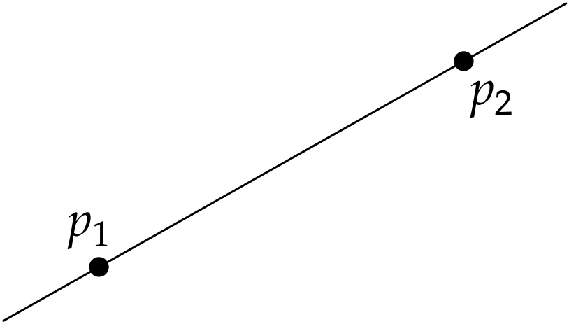
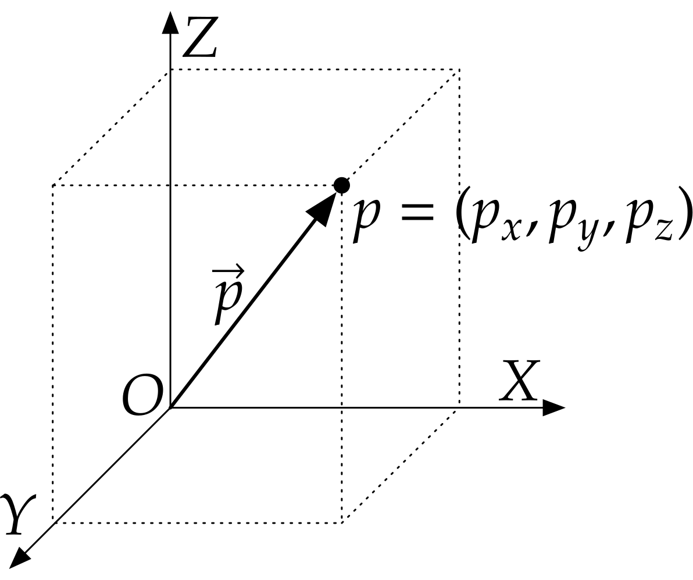
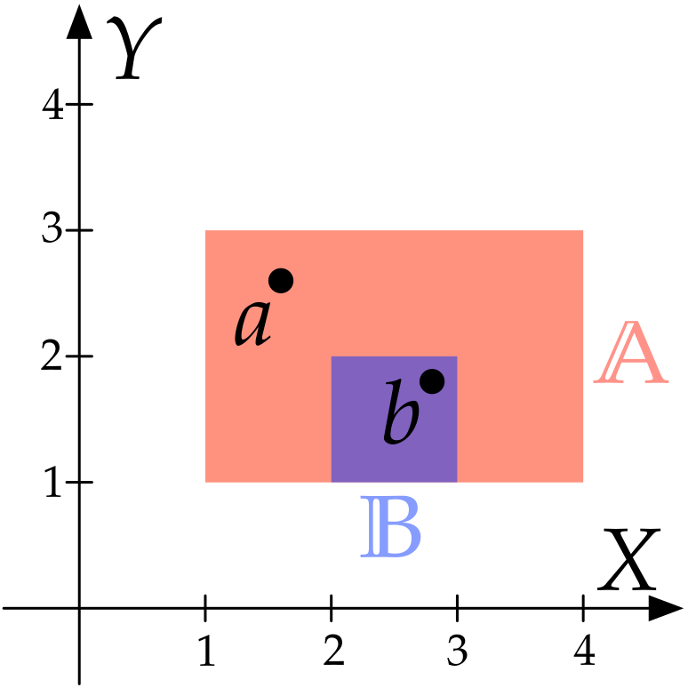
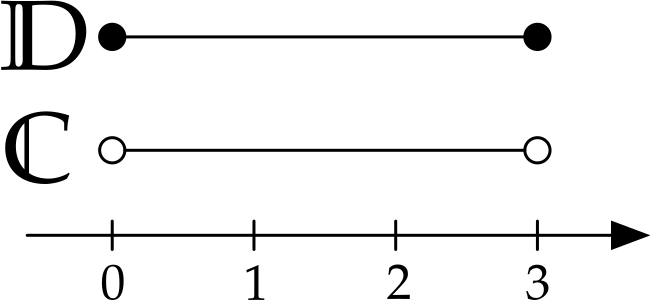
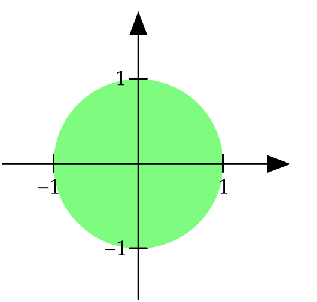
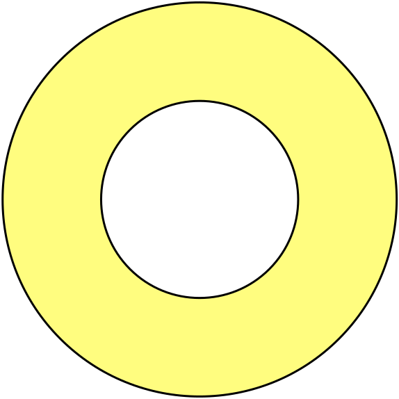

Spatial modelling has its origins in the geographical notion of space, which is in turn based on our own observations of the world and empirical experience [Couclelis, 1999]. However, these informal notions are error-prone and differ from person to person. In order to describe space unambiguously, people have thus turned to models that still describe geographical phenomena, but do so using formal notions derived from mathematics. These formal models make it possible to create and store digital representations of the world in a computer, and thus to use the power of a computer to easily solve spatial problems [Burrough, 1986; Bailey and Gatrell, 1995].
The current chapter describes some of these formal notions and their relevant context, which are used to study the spatial modelling approaches presented in the upcoming chapters. §2.1 introduces some concepts of elementary set theory and mathematical logic, which are later used in definitions in this thesis. §2.2 introduces the basic concepts of geometry, which are used to describe the position, shape and orientation of objects. §2.3 builds on these to present topology, which formalises notions such as the boundary and interior of an object or the relationships between multiple objects.
2.1 Elementary set theory and mathematical logic
Set theory is the branch of mathematics that studies sets, which are collections of abstract objects. While the study of set theory only formally started with Cantor [1874], its intuitive and minimal concepts were later used in order to give a foundation to almost all areas of mathematics8. Since the basic concepts of set theory are used in this thesis in order to describe many other concepts, this section gives a very short primer using the same notation that is used in this thesis. However, it is worth noting that the descriptions used here are reflect the concepts generally used in GIS, and so are meant to be intuitive and not very formal. Perhaps more importantly, these definitions do not reflect modern mathematical thought on the topic9, which is much more precise but also less accessible, e.g. axiomatic set theory.
Set theory starts by considering the existence of a given domain of objects from which one may build sets, which is known as the universe set and denoted as \(\mathbb{U}\). These objects can be anything, including other sets. Set theory allows sets to be regarded as single entities and operated upon [Devlin, 1993]. If an object \(a\) is part of a set \(\mathbb{X}\), it is denoted as \(a \in \mathbb{X}\), read as ‘\(a\) is an element of \(\mathbb{X}\)’. If \(a\) is not part of a set \(\mathbb{X}\), it is denoted as \(a \notin \mathbb{X}\), read as ‘\(a\) is not an element of \(\mathbb{X}\)’.
There are two broad ways to describe the elements in a set, both using curly braces, i.e. \(\{\) and \(\}\). One way to do so is to enumerate all the elements of the set one by one. For instance, the set \(\left\{ 1,2,3 \right\}\) is the set containing \(1\), \(2\) and \(3\) as elements (and no others). The other way to do so is to specify one or more rules that the elements of the set need to fulfil. For instance, the set \(\{ x \mid x\) is a prime number\(\}\) consists of all prime numbers. It is read as ‘\(x\), such that \(x\) is a prime number’.
Sets are by definition unordered and contain unique elements—duplicate items are ignored by convention. A set may contain an infinite number of elements (e.g. as the prime number example above), or no elements at all, in which case it is a special set known as the null set and denoted as \(\{ \}\) or \(\emptyset\). Other commonly used sets with a special notation and name are: the natural numbers (\(\mathbb{N}\)), the real numbers (\(\mathbb{R}\)), the rational numbers (\(\mathbb{Q}\)) and the integers (\(\mathbb{Z}\)).
In order to build more complex sets, the concepts and notation from mathematical logic are used, in particular propositional logic. Propositional logic works with propositions, which are sentences that are either true or false, but not both. These propositions might be altered and combined using various symbols expressing various notions, such as: and (\(\wedge\)), or (\(\vee\)), not (\(\neg\)), implies (\(\Rightarrow\)), is implied by (\(\Leftarrow\)), if and only if (\(\Leftrightarrow\)), for all (\(\forall\)) and exists (\(\exists\)).
Using these concepts it becomes possible to state relationships between sets. For instance, \(\mathbb{A}\) and \(\mathbb{B}\) are then equal (\(\mathbb{A} = \mathbb{B}\)) when an element is in \(\mathbb{A}\) if and only if it is also in \(\mathbb{B}\), which can be denoted as \(\forall x : x \in \mathbb{A} \Leftrightarrow x \in \mathbb{B}\). A set \(\mathbb{A}\) is called a subset of a set \(\mathbb{B}\) (\(\mathbb{A} \subseteq \mathbb{B}\)), or \(\mathbb{B}\) is a superset of \(\mathbb{A}\) (\(\mathbb{B} \supseteq \mathbb{A}\)), when if an element is in \(\mathbb{A}\) then it is also in \(\mathbb{B}\), denoted as \(\forall x : x \in \mathbb{A} \Rightarrow x \in \mathbb{B}\). If \(\mathbb{A} \subseteq \mathbb{B}\) but \(\mathbb{A} \neq \mathbb{B}\), i.e. there is at least one extra element in \(\mathbb{B}\), then \(\mathbb{A}\) is a proper subset of \(\mathbb{B}\) (\(\mathbb{A} \subset \mathbb{B}\)), or alternatively \(\mathbb{B}\) is a proper superset of \(\mathbb{A}\) (\(\mathbb{B} \supset \mathbb{A}\)).
It is also possible to use propositional logic to create new sets by defining certain operations between sets, in particular Boolean set operations, consisting of intersection, union, difference and complement10. The intersection of the sets \(\mathbb{A}\) and \(\mathbb{B}\), denoted as \(\mathbb{A} \cap \mathbb{B}\), consists of all the elements that are both in \(\mathbb{A}\) and in \(\mathbb{B}\), i.e. \(\mathbb{A} \cap \mathbb{B} = \left\{ x \mid x \in \mathbb{A} \wedge x \in \mathbb{B} \right\}\). The union of the sets \(\mathbb{A}\) and \(\mathbb{B}\), denoted as \(\mathbb{A} \cup \mathbb{B}\), consists of all the elements that are either in \(\mathbb{A}\) or in \(\mathbb{B}\), i.e. \(\mathbb{A} \cup \mathbb{B} = \left\{ x \mid x \in \mathbb{A} \vee x \in \mathbb{B} \right\}\). The difference between sets \(\mathbb{A}\) and \(\mathbb{B}\), denoted as \(\mathbb{A} - \mathbb{B}\), consists of all the elements that are in \(\mathbb{A}\) but not in \(\mathbb{B}\), i.e. \(\mathbb{A} - \mathbb{B} = \left\{ x \mid x \in \mathbb{A} \wedge x \notin \mathbb{B} \right\}\). The complement of a set \(\mathbb{A}\), denoted as \(\neg \mathbb{A}\), consists of all the elements that are in the universe set but are not in \(\mathbb{A}\), i.e. \(\neg \mathbb{A} = \left\{ x \mid x \in \mathbb{U} \wedge x \notin \mathbb{A} \right\}\).
Apart from sets, it is also possible to consider tuples of elements, which unlike sets are sequences of ordered elements. A tuple containing exactly two elements is known as a pair, one containing three elements is a treble and one containing \(n\) elements is an \(n\)-tuple. Tuples are denoted using parenthesis, i.e. \((\) and \()\).
A common operation that generates tuples is the Cartesian product. The Cartesian product of sets \(\mathbb{A}\) and \(\mathbb{B}\), denoted as \(\mathbb{A} \times \mathbb{B}\), is defined as \(\left\{ (a,b) \mid a \in \mathbb{A} \wedge b \in \mathbb{B} \right\}\). In other words, it is a set of pairs, where the first element of a pair is an element of \(\mathbb{A}\) and the second element of the pair is an element of \(\mathbb{B}\). This can be generalised to more than two sets, such that the \(n\)-fold Cartesian product of \(n\) sets is an \(n\)-tuple. The \(n\)-fold Cartesian product of a set \(\mathbb{A}\) with itself, i.e. \(\mathbb{A} \times \mathbb{A} \times \cdots \mathbb{A}\), is denoted as \(\mathbb{A}^n\).
Geometry
Geometry is the branch of mathematics concerned with the position of objects in space, a topic that was already formalised by the ancient Greek mathematician Euclid in his textbook the Elements around 300 BCE [Fitzpatrick, 2008]. Euclidean geometry consists of a small set of geometric axioms considered to be intuitively obvious, such as the fact that it is possible to draw exactly one line that passes through two points (Figure 2.1), as well as a long series of postulates derived from these and which describe more complex constructions11.
However, even as Euclidean geometry has the notions of relative distances, angles and areas, objects in Euclidean geometry do not have an absolute position in space. Analytic or Cartesian geometry, developed by Descartes [1637] and de Fermat [1679], significantly changed this by introducing the concept of coordinates. A coordinate system makes it possible to uniquely describe the absolute location of a point as a tuple of real numbers. In particular, the Cartesian coordinate system uses a tuple of perpendicular directed lines as axes, with a positive direction and a negative direction, all of which intersect at a common point known as the origin. A point’s coordinates in the system are then given by signed distances to the respective axes12.
\(n\)-dimensional Euclidean space, which can be described by the set of points \(\mathbb{R}^n\), has \(n\) perpendicular axes intersecting at the origin \(O\), defined by the \(n\)-tuple \((0, 0, \ldots, 0)\), and a point \(p\) in \(n\)D space is thus described by an \(n\)-tuple \((p_1, p_2, \ldots, p_n)\), where \(p_i\) is the signed distance to the \(i\)-th axis. For example, as shown in Figure 2.2, three-dimensional Euclidean space (\(\mathbb{R}^3\)), has three axes, usually named \(X\), \(Y\) and \(Z\), such that a given point \(p\) in 3D can be described by a treble \((p_x,p_y,p_z)\), where \(p_x\) is the signed distance to the \(X\) axis, \(p_y\) to the \(Y\) axis and \(p_z\) to the \(Z\) axis.
A point \(a = (a_1, a_2, \ldots, a_n)\) can also be used to define a vector \(\vec{a}\), which goes from the origin to \(a\). The norm, or magnitude of \(\vec{a}\), denoted as \(\| \vec{a} \|\), gives the length of the line segment between \(a\) and the origin and is computed as: \begin{equation*} \| \vec{a} \| = \sqrt{ {a_1}^{2} + {a_2}^{2} + \cdots + {a_n}^{2}} \end{equation*}
This analytic description of objects also enables using algebra to compute properties, such as the Euclidean distance between two points \(a = (a_1, a_2, \ldots, a_n)\) and \(b = (b_1, b_2, \ldots, b_n)\), also known as the Euclidean metric. This is given by: \begin{equation*} \mathrm{distance}(a,b) = \sqrt{ {(a_1 - b_1)}^{2} + {(a_2 - b_2)}^{2} + \cdots + {(a_n - b_n)}^{2}} \end{equation*}
Some other objects can be described as a linear combination of linearly independent points (i.e. two different points, three non-collinear points, four non-coplanar points, etc.). Considering the points \(p_1,p_2,\ldots,p_n\), a linear combination of them takes the form \(a_1 p_1 + a_2 p_2 + \cdots + a_n p_n\), where \(\sum_{i=1}^n a_i = 1\). For every point \(p_i\), \(a_i\) is thus a scalar coefficient that determines its weight.
If negative weights are allowed, the linear combination of \(n+1\) linearly independent points forms an \(n\)-dimensional unbounded linear object, e.g. a line using two points or a plane using three points. All of these points lie exactly on the object. When the weights are instead restricted to the interval \([0,1]\), the linear combination of \(n+1\) linearly independent points forms an \(n\)-dimensional simplex (called an \(n\)-simplex)—a convex shape with \(n+1\) vertices. A 0-simplex is thus a point, a 1-simplex is a line segment, a 2-simplex is a triangle, a 3-simplex is a tetrahedron, and so on.
Other, more complex objects can be described using equations, which describe particular subsets of \(\mathbb{R}^n\). A hyperplane in \(\mathbb{R}^n\), i.e. a space of dimension \(\mathbb{R}^{n-1}\) in \(\mathbb{R}^n\), can be described by a linear equation of the form \(a_1 x_1 + a_2 x_2 + \cdots + a_n x_n = b\), where \(a_1, a_2, \ldots, a_n\) are the coefficients of the linear equation. Apart from the points exactly on the hyperplane, as shown in Figure 2.3, such a hyperplane separates \(\mathbb{R}^n\) into two parts on either side of it. These are known as open half-spaces and can be obtained by transforming the linear equation into the strict linear inequalities: \(a_1 x_1 + a_2 x_2 + \cdots + a_n x_n < b\) for the half-space below the hyperplane and \(a_1 x_1 + a_2 x_2 + \cdots + a_n x_n > b\) for the one above it. If non-strict linear inequalities are used instead (i.e. using \(\leq\) and \(\geq\) instead of \(<\) and \(>\)), these closed half-spaces also contain the points on the hyperplane.
Considering that a point can be described as a tuple of its coordinates, a hyperplane as a tuple of its coefficients, and similar constructions are possible for many other objects (e.g. a sphere based on a centre point and radius), it becomes possible to have a computer representation of these objects simply by storing tuples of numbers in a data structure13. Moreover, it becomes possible to use them as a basis to describe other, more complex objects by using them as building blocks, either directly or using some of the topological concepts described in the next section, e.g. them forming the boundary of another object.
Since analytic geometry allows the description of objects as sets of points in \(\mathbb{R}^n\), as shown in Figure 2.4, it is also possible to define objects based on Boolean set operations of their point sets.
(a) \(\mathbb{A}\) (purple) and \(\mathbb{B}\) (blue)
(b) Intersection: \(\mathbb{A} \cap \mathbb{B}\)
(c) Union: \(\mathbb{A} \cup \mathbb{B}\)
(d) Difference: \(\mathbb{A} - \mathbb{B}\)
Figure 2.4: Based on two balls \(\mathbb{A}\) and \(\mathbb{B}\), other objects that can be defined using Boolean set operations.↩
Topology
Topology is the mathematical study of the shape of objects, growing out of the analysis of certain problems in geometry, such as the boundaries of objects and the different possible notions of connectedness. In particular, it studies the properties of certain objects that are preserved under so-called topological transformations or continuous maps, which include stretching and bending but exclude tearing or gluing.
There are two branches of topology that are most relevant in the context of spatial modelling, point-set topology and algebraic topology, respectively presented in §2.3.1 and §2.3.2. Point-set topology describes space using concepts derived mainly from set theory, representing objects as continuous sets of points. The properties of these sets and the relationships between multiple sets can then be analysed and described. Algebraic topology adds concepts from abstract algebra as well, representing objects as structured sets of discrete elements, such as points, edges and faces. As these elements and the relationships between them are both discrete, it is possible to use a wide variety of algorithmic methods on them, including graph theory, combinatorics, algorithmic algebra, and computational geometry and topology.
2.3.1 Point-set topology
Point-set topology, also known as general topology, describes objects as sets of points satisfying certain conditions, such as those in the construction in Figure 2.5. These objects can then be analysed based on the properties of the sets that describe them, such as whether a set is bounded or unbounded, has a certain number of holes, or is orientable or unorientable. When multiple objects are present, the relationships between their corresponding sets can be analysed as well, such as whether they are touching or overlapping, or whether it is possible to define a function that maps between these sets.
Point-set topology works with topological spaces, a much more general notion than that of Euclidean space. This allows the description of different types of space with different properties. A topological space consists of a set of points and a topology on them satisfying a series of axioms. Edelsbrunner [2014] provides the following simple formulation. Given a set of points \(\mathbb{X}\), a topology of \(\mathbb{X}\) is a collection of subsets, which are called open sets14, such that:
- \(\mathbb{X}\) is open and the empty set is open;
- the intersection of any two open sets is open;
- the union of any family of open sets is open.
While the definition of an open set for general topological spaces is rather complex, in the context of spatial modelling we are generally interested in Euclidean space, which has a straightforward definition analogous to the concept of an open interval in 1D (Figure 2.6). A point set \(\mathbb{S}\) in Euclidean space is open if, given any point \(p \in \mathbb{S}\), there exists a real number \(\epsilon > 0\) such that, given any point \(q\) whose Euclidean distance to \(p\) is smaller than \(\epsilon\), then \(q \in \mathbb{S}\) as well. A point set is closed when the point set formed by its complement is open. Any point on an open interval fulfils these conditions, but the endpoints of a closed interval do not. Note that it is possible for a set to be open and closed (e.g. an interval containing only one of its endpoints).
For example, in 2D, the plane together with the topology generated by the Euclidean metric is the topological space known as the Euclidean topology of the plane, which can be defined based on open disks, which are analogous to 1D open intervals. An open disk is the set of points closer to a point \(p \in \mathbb{R}^2\) than a non-zero distance \(r\), such as the unit open disk shown in Figure 2.7. It is easy to see that as these 2D disks do not contain their boundaries, the intersection of any two open disks and the union of any number of disks are both open.
Based on the concepts of open intervals in 1D, open disks in 2D, or open balls when talking about any dimension, it is possible to partition a Euclidean space into three parts: its interior, boundary and exterior. An example of these is shown in Figure 2.8. The interior of a point set \(\mathbb{S}\) consists of all points where there exists an open ball centred at them such that all the points in the ball are in \(\mathbb{S}\), the boundary of \(\mathbb{S}\) consists of the points where all possible open balls centred at them have points in \(\mathbb{S}\) and out of \(\mathbb{S}\), and the exterior of \(\mathbb{S}\) consists of all points where there exists an open ball centred at them such that all the points in the ball are out of \(\mathbb{S}\). The closure of \(\mathbb{S}\) is the union of its interior and its boundary. The regularisation of \(\mathbb{S}\) is the closure of its interior and a point set is thus regular when it is equal to its regularisation.
Once objects are defined as sets of points, point-set topology works with functions that relate these sets to each other. A function from one point set to another is said to be continuous if the preimage (i.e. the inverse image) of every open set is open. If a function is continuous and its inverse function is also continuous, it is known as a homeomorphism. When such a function exists between two point sets, they are said to be homeomorphic or, more informally, topologically equivalent, such as the two objects shown in Figure 2.9.
Another important topological concept is that of a manifold. A manifold is a topological space that is homeomorphic to the Euclidean space of a certain dimension. Intuitively, this means that a manifold locally resembles Euclidean space, even if globally it does not. For example, a line and a circle are 1-manifolds, while a plane, a sphere and a torus are 2-manifolds. Generally, when the term manifold is used in GIS it refers to a 2-manifold.
2.3.2 Algebraic topology
Conceptually based on point-set topology, algebraic topology, also known as combinatorial topology, uses concepts from abstract algebra in order to analyse topological spaces. A famous early application involved the answer to the problem of the Seven Bridges of Königsberg by Euler [1741], explained in Figure 2.10. However, the real foundations of the field were set when many of its concepts were formalised in algebraic form by Poincaré [1895].
Figure 2.10: The problem of the Seven Bridges of Königsberg asks whether it is possible to find a route through the city that would cross each bridge (highlighted in red) exactly once. Euler [1741] proved that there is no such route in terms of a graph. Whenever one enters a piece of land by a bridge, one has to leave it by another bridge except at the beginning or end of the route. Thus, there must be an even number of bridges connected to all but (at most) two pieces of land. Since all pieces of land have an odd number of bridges, the problem has no solution. Based on an image from a 1613 engraving by Joachim Bering.↩
Algebraic topology works by relating topological spaces to groups with specific properties, often by creating combinatorial analogues of such spaces, from which their properties can be extracted using algebraic methods [Henle, 1994], which can be applied algorithmically. As it uses discrete structures rather than continuous point sets, it is often more suited to computer implementations of topological concepts than point-set topology [Worboys and Duckham 2004, §3.3.5].
Two constructions of algebraic topology are widely used as the basis of GIS: simplicial complexes and cell complexes. An \(n\)-dimensional simplicial complex is a structure made of connected simplices, the simplest objects that can be built in any dimension. As shown in Figure 2.11, an \(n\)-dimensional simplex (\(n\)-simplex) is a combinatorial primitive made from a set of \(n+1\) vertices. Figure 2.12 shows a group of buildings represented as a 3D simplicial complex. A 0D simplicial complex consists of a set of discrete points (i.e. a point cloud) and a 1D simplicial complex is a plane graph. A 2D simplicial complex is known as a triangulation and a 3D simplicial complex as a tetrahedralisation.
Figure 2.12: The buildings in the TU Delft campus are represented as a 3D simplicial complex, such that each separate building is a set of adjacent tetrahedra. Note that only the tetrahedra’s edges are shown here.↩
A \(j\)-dimensional face (\(j\)-face) of an \(i\)-simplex, \(j < i\), is a \(j\)-simplex made from a proper subset of its vertices. Sometimes the dimension of the face is omitted and it can be deduced from the context, but in GIS it generally refers to each of the \(i+1\) \((i-1)\)-faces of an \(i\)-simplex. In the context of an \(i\)-dimensional simplicial complex, a face refers to each of the \(i\)-simplices in the complex, such as the triangles in a triangular mesh.
More formally, a simplicial complex can be defined as a collection of simplices such that:
- every face of a simplex is also in the simplicial complex;
- the intersection of any two simplices is either empty or is a common face of both of them16
Based on the set of common vertices shared by two simplices, it is possible to define certain topological relationships between them. Two \(i\)-simplices are said to be adjacent if they have a common \((i-1)\)-face. An \(i\)-simplex and a \(j\)-simplex, \(i \neq j\), are said to be incident if either is a face of the other.
A cell complex is a structure made of connected cells, where an \(i\)-dimensional cell (\(i\)-cell) is an object homeomorphic to an open \(i\)-ball (i.e. point, open arc, open disk and open ball). 0-cells are known as vertices, 1-cells as edges, 2-cells as faces and 3-cells as volumes. Considering only linear geometries, 1-cells are thus line segments, 2-cells polygons and 3-cells polyhedra. Figure 2.13 shows a group of buildings represented as a 3D cell complex.
Figure 2.13: The buildings in the TU Delft campus are represented as a 3D cell complex. All the 2-cells of a 3-cell are shown in the same colour, the 1-cells are shown as black lines.↩
A \(j\)-dimensional face (\(j\)-face) of an \(i\)-cell is a \(j\)-cell, \(j \leq i\), that lies on the boundary of the \(i\)-cell. A facet of an \(i\)-cell is an \((n-1)\)-face of the cell. As in a simplicial complex, two \(i\)-cells are said to be adjacent if they have a common facet, and an \(i\)-cell and a \(j\)-cell, \(i \neq j\), are said to be incident if either is a face of the other. In the context of an \(i\)-dimensional cell complex, a face refers to each of the \(i\)-cells in the complex, such as the polygons in a polygonal mesh.
More formally, a cell complex can be defined inductively as in Hatcher [2002]. An \(n\)-dimensional cell complex is built by starting from a set of isolated vertices, and \(\forall 0 < i \leq n\) an \(i\)-cell is built by attaching itself to the \((i-1)\)-faces (facets) on its boundary, these facets having been previously added to the complex. That is, an edge is built by linking the vertices on its boundary, a surface by linking the edges on its boundary, a volume by linking the surfaces on its boundary, and so on. Like in a simplicial complex, a facet of a \(n\)-cell in an \(n\)-dimensional cell complex lies between it and an adjacent \(n\)-cell, unless it is on the boundary of the complex.
Apart from the concepts of adjacency, incidence and other relationships between between individual simplices and cells in a complex, it is also possible to define relations and transformations between entire simplicial/cell complexes. The Poincaré duality theorem [Poincaré, 1893]17 states that for every \(n\)-dimensional simplicial/cell complex, there exists a dual simplicial/cell complex of the same dimension, where for every dimension \(i\), the \(i\)-simplices/cells in the original complex are mapped one-to-one to \((n-i)\)-simplices/cells in the dual complex. The duality transformation is an operation that creates the dual of a simplicial/cell complex. This can be seen as a generalisation of the concept of a dual graph in 2D, where a graph \(G\) has a dual \(G^\ast\), such that vertices in \(G\) correspond to faces in \(G^\ast\), edges in \(G\) correspond to edges in \(G^\ast\) and faces in \(G\) correspond to vertices in \(G^\ast\).
For example, considering the Platonic solids in Figure 2.14, the tetrahedron is self-dual (i.e. it is dual to itself), the octahedron is dual to the cube (and vice versa), and the dodecahedron is dual to the icosahedron (and vice versa). This transformation can be seen by creating a new vertex at the centre point of the face of the Platonic solid, connecting these vertices when their dual faces are adjacent. The original vertices become faces whose number of vertices is equal to the number of originally incident faces.


(a)
(b)
(c)
(d)
(e)
Figure 2.14: The Platonic solids are the five regular polyhedra that have regular polygonal faces: (a) tetrahedron, (b) octahedron, (c) cube or hexahedron, (d) dodecahedron, and (e) icosahedron. From Wikimedia Commons.↩
8. Even as some mathematicians and philosophers have argued against set theory as a foundation for all of mathematics.↩
9. In short, these intuitive definitions pretty much assume that anything can be put into a set without leading to paradoxes, which formally is not the case.↩
10. These are the most commonly described basic operations. However, it is possible to define other operations that are equally useful as a base. Either can be used to form other operations by composition.↩
11. Non-Euclidean geometry does away with some of these axioms while remaining self-consistent [Bolyai, 1832; Lobachevsky, 1840]. However, it is much less relevant in the context of spatial modelling.↩

Figure 2.1: There is exactly one line that passes through any pair of points.↩
12. A more rigorous and correct explanation would be based on a set of linearly independent vectors, but this creates a recursive definition.↩

Figure 2.2: A point \(p\) in 3D described by a treble \((p_x,p_y,p_z)\)↩

Figure 2.3: A plane separates \(\mathbb{R}^3\) into two parts on either side of it.↩
13. This hides the fact that using real numbers in a computer is very difficult in practice, thus floating-point approximations are generally used instead [Goldberg, 1991]. The main consequences of this in spatial modelling are discussed in §A.2.↩

Figure 2.5: The rectangle \(\mathbb{A}\) is represented by the set of points where \(1 \leq x \leq 4\) and \(1 \leq y \leq 3\). In more compact (set builder) notation, \(\mathbb{A} = \left\{ (x,y) \middle| x \in [1,4] \wedge y \in [1,3] \right\}\). For the other objects, rectangle \(\mathbb{B} = \left\{ (x,y) \middle| x \in [2,3] \wedge y \in [1,2] \right\}\), point \(a \in \mathbb{A}\), point \(b \in \mathbb{B}\) and point \(b \in \mathbb{A}\). \(\mathbb{B}\) is a subset of \(\mathbb{A}\) (i.e. \(\mathbb{B} \subset \mathbb{A}\)).↩
14. Note that there are alternative definitions based on the concepts of closed sets or of neighbourhoods [Hausdorff, 1914]. For a simple definition using neighbourhoods in a GIS context see Worboys and Duckham [2004, §3.2.2] ↩

Figure 2.6: An open interval \(\mathbb{C} = (0,3) = \left\{x \middle| 0 < x < 3 \right\}\) does not include its endpoints. By contrast, a closed interval \(\mathbb{D} = [0,3] = \left\{x \middle| 0 \leq x \leq 3 \right\}\) includes its endpoints.↩

Figure 2.7: The unit open disk, i.e. an open disk of radius 1 centred at the origin can be defined as \(\mathbb{D} = \left\{ x \in \mathbb{R}^2 \middle| \| x \| < 1 \right\}\).↩

Figure 2.8: An annulus with boundary partitions the Euclidean plane into three parts: its interior (yellow), its boundary (black) and its exterior (the rest of this page). Note that none of these necessarily have to be connected.

(a) A coffee mug

(b) A donut
Figure 2.9: A coffee mug and a donut are homeomorphic15. Intuitively, this can be known as it is possible to deform one into the other. The mug was rendered from the model at http://www.thingiverse.com/thing:7953.↩
15. Related to the joke: ‘A topologist is a mathematician who can’t tell the difference between a coffee mug and a donut’.↩

Figure 2.11: An \(n\)-dimensional simplex is a combinatorial primitive made from a set of \(n+1\) vertices. A 0-simplex is thus a point, a 1-simplex is a line segment, a 2-simplex is a triangle, and a 3-simplex is a tetrahedron. Here they are shown as if embedded in \(\mathbb{R^3}\).↩
16. Note that this implies a definition where a simplex contains its boundary.↩
17. It was only formulated as an observation without proof in Poincaré [1893]. Poincaré [1895] describes it in more detail but contains a flawed proof. Valid proofs would have to wait until Poincaré [1899, 1900].↩